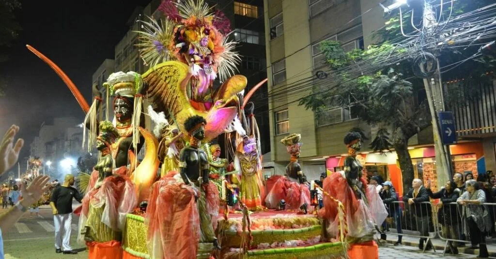
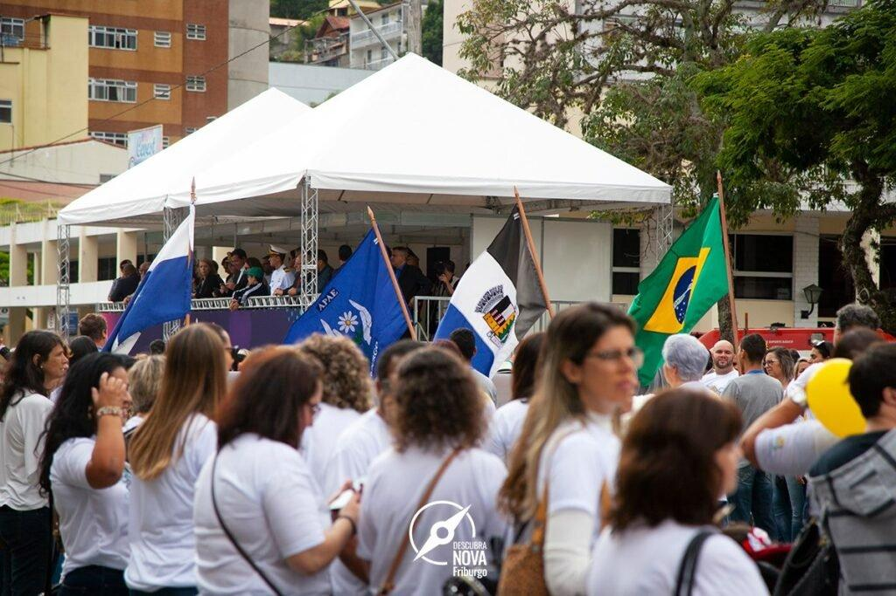
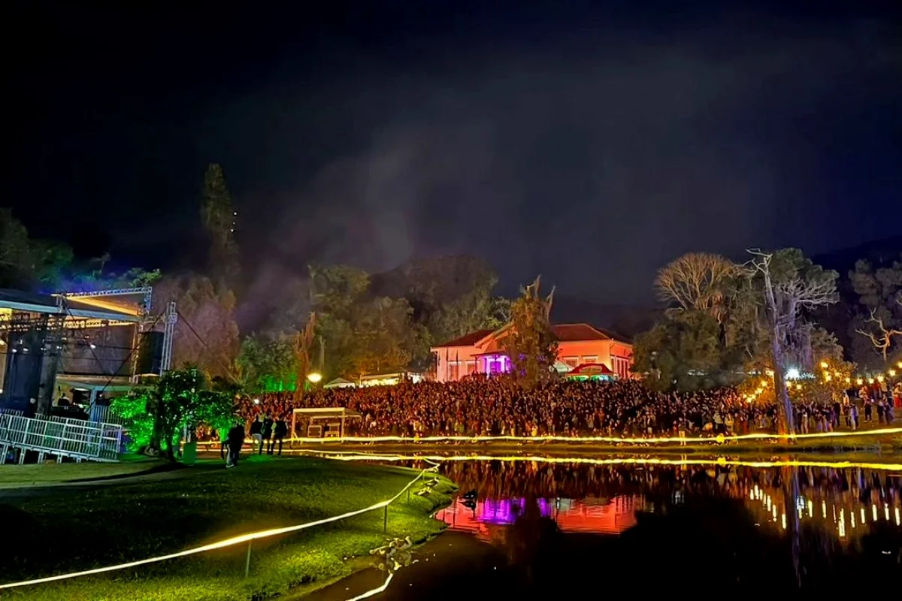
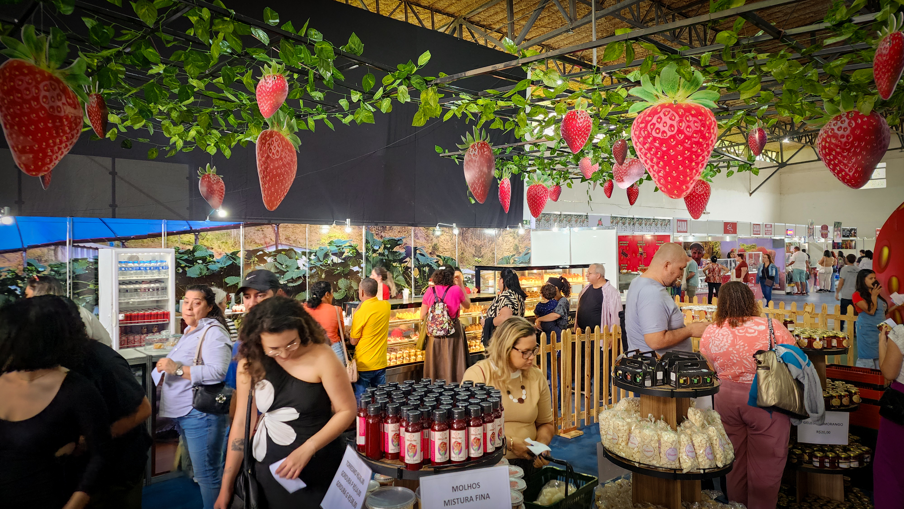
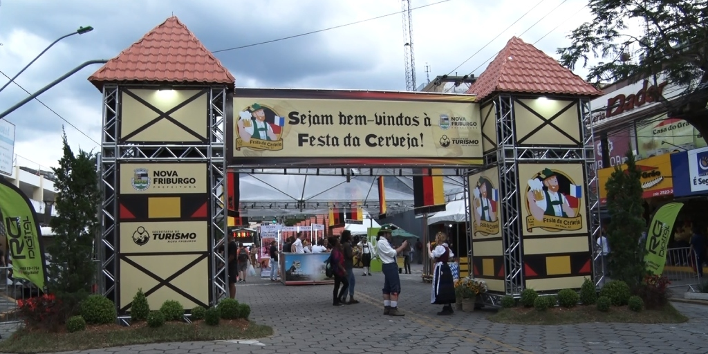

-
Carnaval de Nova Friburgo

O carnaval de Nova Friburgo é considerado o maior carnaval do interior do estado do Rio de Janeiro. A Avenida Alberto Braune recebe os desfiles das escolas de samba, blocos de rua e shows gratuitos, movimentando milhares de moradores e turistas durante cinco dias.
-
Aniversário da Cidade

A comemoração da fundação da cidade reúne shows, apresentações culturais, desfiles, atividades para famílias e eventos históricos no centro. Em algumas edições, a celebração aparece como MAIFEST, destacando as raízes europeias de Nova Friburgo.
-
Festival de Inverno

É um dos eventos culturais mais importantes da cidade. Durante cerca de duas a três semanas, diversos espaços recebem shows, teatro, dança, música clássica, oficinas e exposições, aproveitando o frio da serra para criar um clima semelhante ao de cidades europeias.
-
Festa do Morango com Chocolate

Provavelmente o evento gastronômico mais famoso de Nova Friburgo. O Nova Friburgo Country Clube recebe estandes de doces, tortas, fondue, chocolates artesanais e decoração floral, atraindo milhares de visitantes todos os anos.
-
Festa da Cerveja

Inspirada nas tradições alemãs da cidade, reúne cervejarias artesanais da região, gastronomia, música ao vivo e um ambiente semelhante ao de uma Oktoberfest serrana.